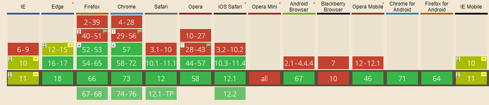
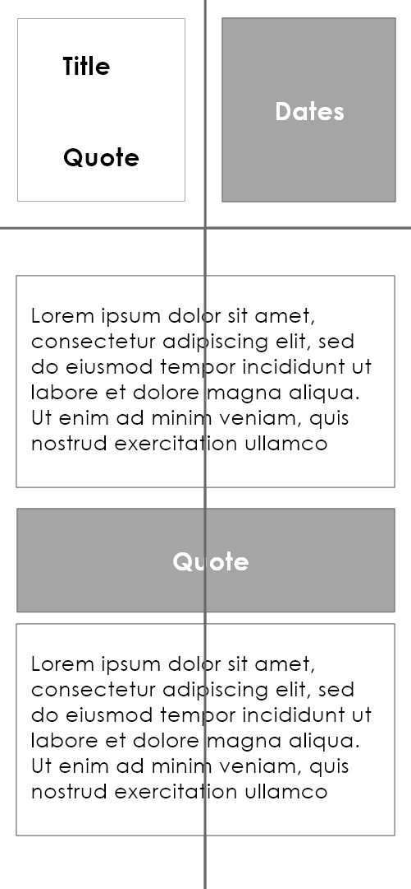
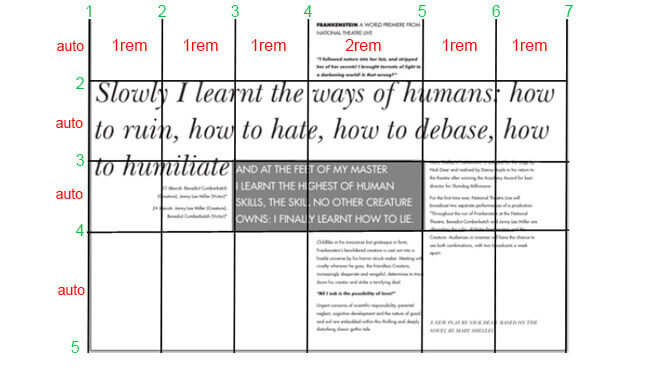
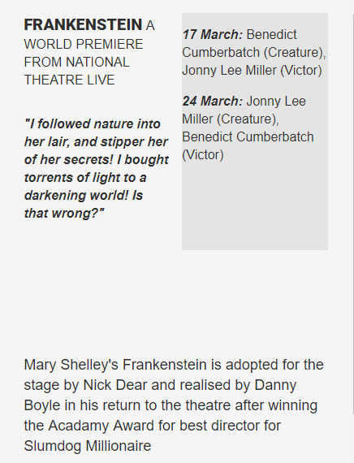
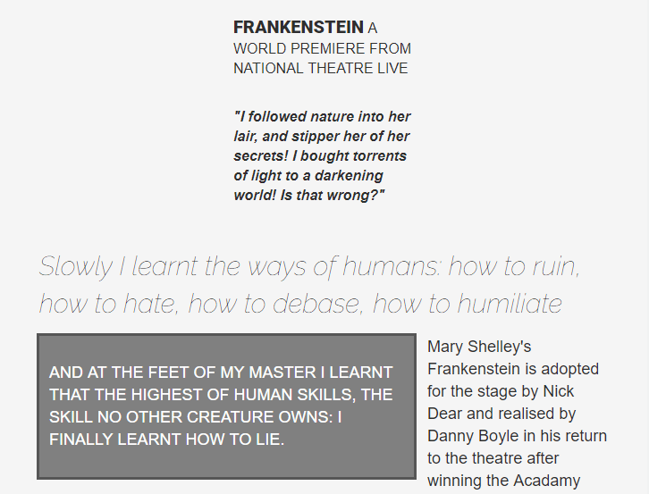

Aim and objectives
To research, design and build complex layouts using CSS grid.
- To find out what CSS grid is and how it compares to other frameworks.
- To undergo research on how to use CSS grid for complex layouts.
- To develop and code a responsive and accessible layout using CSS grid that conforms to current and best practices.
What is CSS grid?
Before I go into detail about my project, it’s best to have a better understanding of what CSS grid is. “CSS grid is a layout method designed for the two-dimensional layout of items on a web page or application.” (GridByExample, unknown). This basically means that it makes it easier to design web pages without having to use floats and positioning.
Current browser support
CSS Grid is currently supported by the majority of updated browsers such as Chrome and Firefox. However internet explorer still doesn't fully support grid yet. See Can I Use to see if the browser you are using supports the grid layout.
My current skill
Before starting this project I had never used CSS grid before as I was set in my ways of using other technologies, such as flexbox, for my layouts. I convinced myself that there was no need of learning another technique for laying out websites. But once I found out what you could do with CSS grid, I knew I had to try it.
The project
Before starting the second project I had to find a suitable complex layout that would be hard to replicate on the web. I searched several magazine archives online, but I struggled finding a design that didn't heavily rely on using images and a column layout.
After searching for a while I finally found an article on smashing magazine which talked about unusual visual hierarchies.
In this article I found the perfect layout that I wanted to replicate. The design was of an advertisement for a Frankenstein theatre performance. It includes a variety of text and sizes all laid out in a non-linear fashion.
Note: For this project I used the firefox developer edition which gave me a visual representation of the grid on the page.
The approach
As with every project, I started with a mobile first approach in mind, designed for the smallest screen and working my way up. It is the ideology that mobile design, as the hardest, should be done first. This is because the smallest designs will only have essential features. The key to mobile first is to make sure there is a good hierarchy of information meaning that all the important information can be found at the top of the page, such as the play name and dates.
First I created the mobile wireframes created in Adobe XD. This design includes a 2 column grid with each block of text is separated with a quote from the play.
Then I created a wireframe for the desktop version of the site using the image I was replicating. This was useful as it allowed me to see at a glance how many rows and columns I will need (6 columns and 4 rows).
The coding
See the Pen Project 1 - part 1 by Lewis Hall (@NotLewis) on CodePen.
To see the grid in action let's take a look at my project. I started of by converting all of the text from the original image into HTML. With a little bit of styling in CSS, the page is starting to look similar to what I designed in Adobe XD.
See the Pen part2 by Lewis Hall (@NotLewis) on CodePen.
Next I enclosed all of the divs containing content within another div named grid-container. This enabled
me to start adding a grid to the webpage. I started of with creating the 2 column grid by using the
display: grid is required to start using the grid layout and the fr unit makes sure that the
values will be divided equally.
Mobile view
See the Pen part3 by Lewis Hall (@NotLewis) on CodePen.
Once I had two columns I could then start moving elements around the page. This is done by specifying which column and row a div will fall into. For example, the main quote, which is on row 3, starts on column one and spans over to the third column.
The layout should now look close to what I had originally designed in my mobile wireframe.
Tablet view
Once the browser reaches 740 px in width. The grid then changes from a 2 column to a 3 column grid using media queries. This enables me to play around with the layout a lot more. At this point my design is starting to look more similar to the original one, with the title at the top of the page and the main quote in the middle being surrounded by text. As the page width increases, so does the size of the text.
This was achieved in a similar way as the two column grid, but this time grid-template-columns is set to repeat(3,1fr).
This line of code is a simple and more semantical way of setting three columns with an equal width.
Desktop view
See the Pen part4 by Lewis Hall (@NotLewis) on CodePen.
Finally once the viewport reaches 1340px the screen size is big enough to where I can replicate the original design. This was done by
setting up a six column grid, with the fourth column being twice the size as the others.
grid-template-columns: 1fr 1fr 1fr 2fr 1fr 1fr;
Then using the same technique of moving the each element around using grid-column and
grid-row I was able to replicated the original design.
Conclusion
Learning CSS grid taught me a lot about layouts on the web. One problem I encountered was that in the original design,
the quote inside the grey container was up a little bit outside of the grid. To overcome this I simply added
position: relative and top: -5rem to move the element up.
Position relative was something that I had hardly used in the past and its another layout technique I understand more than before.


{kind=link}